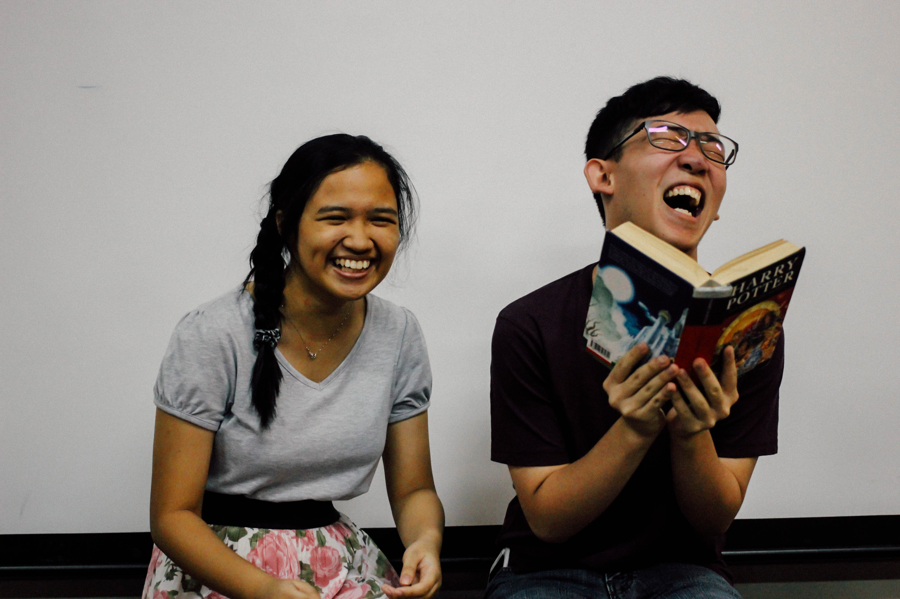

Stand-Alone plays
Plays with their own self-contained universe
That's Not the Point
Audrey sits at a bench outside the University library. She has no books, absolutely nothing on her. She just stares into space, her lovely dark eyes glazed over, yet still looking remarkably contemplative. She does not move an inch, hands folded, as if trying to contain herself in that very small space, afraid that she might leak or seep or sink. Benjamin emerges from the library, the book “Heidi” in his hand. He has a big lumbering ease about him. He spots Audrey and in an instant he knows that something is wrong. Her body language is all wrong. That’s not how Audrey moves or carries herself. He moves towards her and gently settles beside her, careful to keep his movements slow and careful.
That’s Not the Point is about four university students, Audrey, Ben, Wei Hao and Xin Ling, who are about to depart from their university and embark on the next phase of their lives. During this period of transition, they consider the future they have in front of them and whether it is something that they want. Each of them will have to make tough choices, which could make or break relationships they have formed with each other. The play begins with Audrey having a bad dream and follows the conversations that they have with each other.
Into the Bench

“He stared at her, ravenously amorous. Is that even a proper phrase? I don’t know, but those are the words that perfectly describe his expression. He looks hungry, as if he wants to devour her, but with patience and love. Her stare is equally greedy, like famine as it sweeps through everything. I looked around to see if anyone saw what I saw, but I was the only one looking.”
The Engineer
Into the Bench is a play about the fine line between delightfully beautiful illusions and the harsh truth of reality. It explores how different groups of people react towards different situations when blinded with an ideal illusion that they believe (or want to believe) is real. This play incorporates different stories together. The first involves a waitress, who in a desperate attempt to include something interesting in her life, mistakes a tech guy she just met to be "Sam Pang". The second is the story of a mother who meets a businessman in a park. In an attempt to re-live memories, a crisis occurs and she enlists his help to find her daughter, which proves to be more than just a walk in the park. Thirdly, an engineer tries to rekindle old sparks with an accountant from his past, despite facing rejection for reasons he refuses to accept.